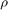

Simulation of LPV systems
A primer on simulation in LPVTools.
Contents
Introduction
LPVTools provides a set of tools to perform time-domain simulation of LPV systems. The tools can be split into two parts: First, there are overloaded versions of Linear Time-Invariant (LTI) simulation tools from the Control Systems Toolbox (lsim, step, impulse, initial). These functions can be used to evaluate the pointwise behaviour of the LPV system when the scheduling parameter () is held constant. Second, there are LPV simulation tools that enable simulation of the LPV system when the parameter is allowed to vary with time. These LPV simulation tools are able to capture the time-varying nature of the LPV system's dynamics, and allow the system's behaviour to be evaluated for different parameter trajectories.
LPV Simulation Commands
| LPVLSIM | Simulate parameter dependent time response of a LPV system. |
| LPVSTEP | Simulate parameter dependent step response of a LPV system. |
| LPVINITIAL | Simulate initial conditions response of a LPV system. |
| LPVIMPULSE | Simulate parameter dependent impulse response of a LPV system. |